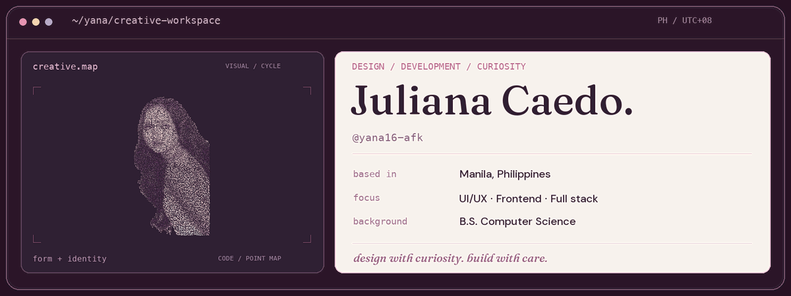
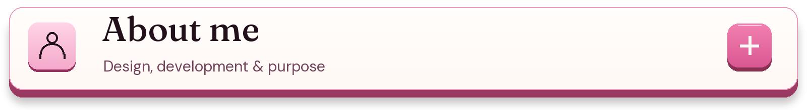
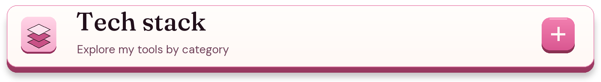
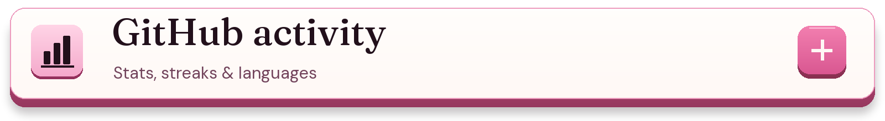
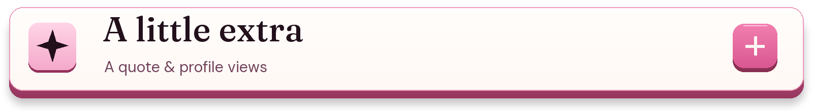

Click a panel to explore. Open a little, or open it all.


somewhere between a new chapter & a new idea.
📚 lost in the pages
fiction books · manga · manhwa · manhua · webtoons
“just one more chapter.” famous last words.
🎀 collector of tiny joys
cute stuff, pretty details & anything that makes me go “aww.”
🌱 currently growing
learning full stack, one little idea at a time.
💬 always up for a chat
good reads, UI/UX, creative web apps & exchanging project feedback.
good stories & good ideas are always welcome. ♡


Tools across my projects, coursework and continued learning.
UI/UX practices: wireframing, prototyping and user flows.
Additional tools and technologies
Data and computer vision
Design and documents
Deployment and networking


These cards reflect public data available to each service. Hidden activity may be missing; language percentages describe repository contents.


Developer quote
a little code, a lot of curiosity. ♡